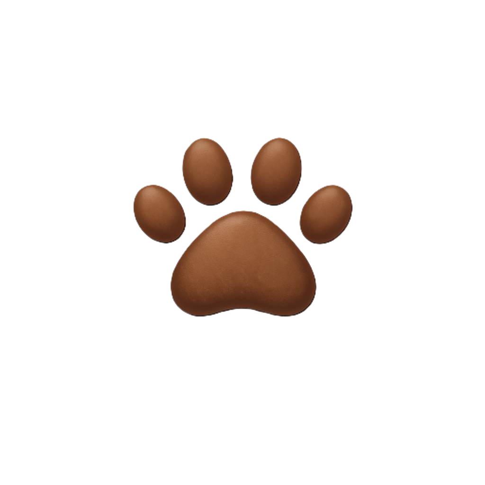
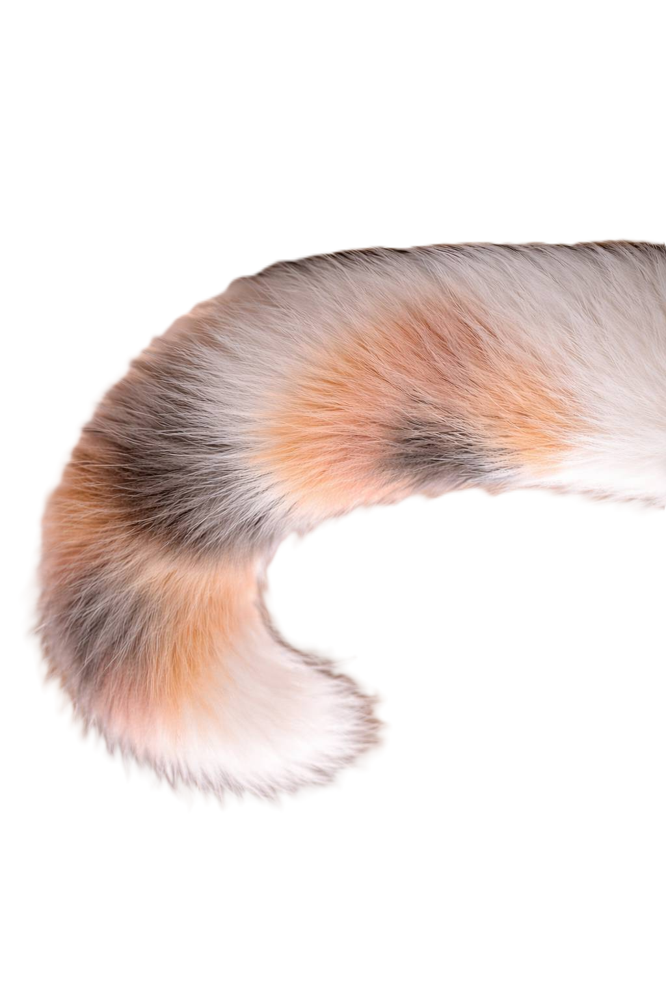

猫カフェさくらについて
私たちのカフェは、
さくら猫と呼ばれる保護猫たちが、安心して過ごしながら
新しい家族との出会いを待つ場所です。これまでさまざまな背景をもつ猫たちが、ここで穏やかな時間を過ごしています。
人に慣れること、環境に慣れること、そして「この人かもしれない」と思える出会い。
そのすべてを、猫のペースで大切にしています。
ふれあいの時間が、猫と人、どちらにとってもやさしいご縁につながりますように。


さくら猫について
さくら猫とは、
不妊・去勢手術を受けたしるしとして、耳先を桜の花びらの形にカットされた猫のことです。
地域で見守られながら暮らしてきた猫や、保護された猫たちが対象で、これ以上増えないようにするための大切な取り組みのひとつです。
耳のカットは、猫の健康と命を守るためのもので、痛みや負担は最小限に配慮されています。